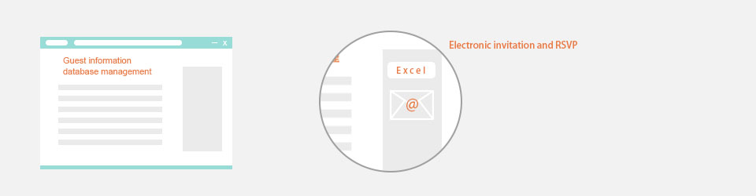
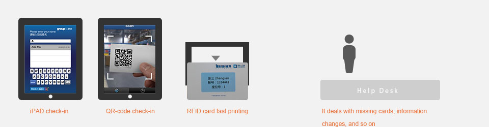
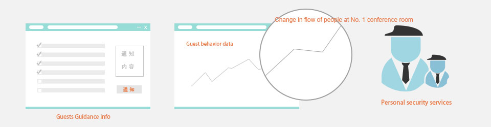
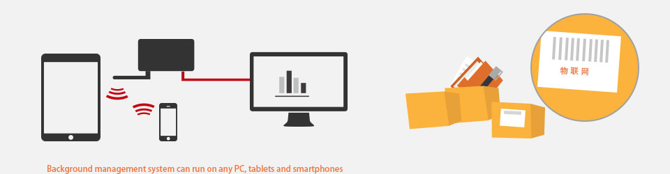

1Preparation Stage- guest invitation and list sorting out
An invitation process of a series of events is often a time-consuming and tedious process. You have to face many changes in the guest’s information and this can make the event preparation a challenging job.The "Cloud Computing" based digital technology is a good solution to solve these problems:
- It provides an online guest information database, so as to change such a database at any time, and automatically synchronize with the data across other links.
- It supports importing Excel lists or importing guest lists from the databases of the previous events.
- It offers electronic invitation module, and supports automatically collection of receipts and also updates attendances.
- It can deal with online distribution of guest seat number, room number, etc., and transmit those information timely to the check-in and Guide-spot through "Cloud Server”.

2Start - Guest check-in, identity verification, receiving guests
We understand check-in link serves as entrance of the event, represents the quality of the sponsor. If check-in is good it can make guests feel quite respected from the start, quickly establish a sense of trust to the sponsor.
- iPAD Pilot check-in mode can effectively avoid misunderstandings between guests and reception staff so as to greatly improve the efficiency of check-in, with each guest only 15 seconds.
- Also you can use the optional QR-code as an unique badge for each guest.
- It provides VIP with a chip admission card in advance and it can deal with identity recognition once guests have gone through the passageway and immediately inform the working staff or triggers a welcome message to the guests.
- At the check-in point, it can print an admission card timely by an equipped high-speed CARDS printer, and make a card within 20 seconds while associating with guest identity information.
- It supports RFID special-shaped CARDS, NFC tags (bracelet, wrist strap, etc.) as a symbol of guest identity, even with the gift card.
- Help Desk on site can deal with missing cards, information changes, and so on.
- With optimized partners, we provide concierge car, airport shuttle, which can further reduce your workload.

3Process of events - Notice guidance, data collection, and personal security
Tablets everywhere in conferences rooms together with guests verification system can make it possible to provide each guest with personalized conferences information guidance, and meanwhile, the sponsor can also deal with conferences/events notice through SMS message or Wechat.
- It supports sub-groups and even point-to-point sending of notification and reminder.
- With the help of RFID/NFC scanning hot spots, it is possible to record the guests behavior data and individual preferences data in the process of guests interaction.
- With optimized partners, we provide well-trained security personnel and " Men in Black" as personal bodyguards for VIP guests, which shows honor, and lifts the level of events and conferences!

4Background supporter - Dispatching system, articles management
Guests only see the considerate and smiles at the front desk, but can not see the professional way of work at the background. Cloud-ID system provides the visualized uniform background interface, which helps you know the status of all break-out rooms, VIP, and so on. All in control, and nothing to worry about!
- Background management system can run on any PC, tablets and smartphones, and the staff can log in to check anytime and anywhere by wifi or 3G;
- It provides functional modules for notice-sending within staff groups and automatic alarm.
- Cloud-ID provides a label for each article, that matches its owner, and staff equipped with hand wireless scanning device. Cloud-ID system provides the articles management through “Internet of things(IOT)”, so you no longer need to screen out a missing item all night with fuss.

5After the event - report generation and data mining
After the event, it generates the statistical report according to your request.Speak with data, and thus you can show your boss the value of your work.
- It can automatically deal with event data statistics, provide reports that can be downloaded online.
- “Cloud Server” updates automatically the guest database from the information collected in events to lay a good foundation for the invitation work of your next event.
- It can associate with guest behavior preference data for effective support of subsequent sales tracking work.
For detailed technical data and professional consulting services, please contact us using the following means.